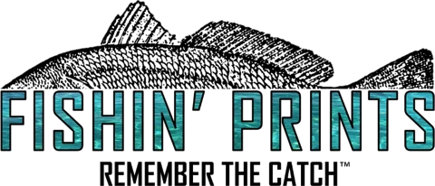

AI audits, automation and training for small and medium-sized businesses
Do more withthe teamyou have.
We find the work that eats your team's week, automate it, and train your people to use AI on the rest.


Three services.
Take one, or all three.
AI Audit
We sit with the people who do the work and find where the hours go. You get a ranked list: what to automate, what to train, what to leave alone.
First step: walk us through your week.Automation
Systems that do the repetitive work inside the tools you already use: orders entered, bills matched, intake sorted, reports written. Anything unusual waits for a person.
First step: send us twenty recent examples of the paperwork.AI Training
We set up Claude for your company and train your team on their real work, so they leave with tools that already do part of their job.
First step: bring the team and one task each.For the teams that keep a business running.
- Office and adminBills, forms, filing and the shared inbox.
- OperationsOrders, scheduling and the hand-offs between them.
- Sales and serviceFollow-ups, quotes and customer requests.
- Finance and billingInvoices, statements and month-end.
- Owners and managersThe Monday summary and the decisions behind it.
Questions owners ask us first.
We already pay for ChatGPT and almost nobody uses it. Why is this different?
We train people on their own work, not on features, and save what they build where the whole team can use it.
I don't have an IT person. Who keeps this running?
We do, for as long as you want. It runs on the tools you already have, and you get the notes to take it over.
Will this replace my staff?
No. It takes the retyping and chasing off their plate. Most owners use the time to grow without hiring.
Is our data safe?
Stored encrypted, seen only by your team and ours, and never used to train AI. Nothing is sent or approved without your say.
Tell us what your team does by hand.
Thirty minutes, free. We'll tell you which of the three fits, or that none does.
Book a free call